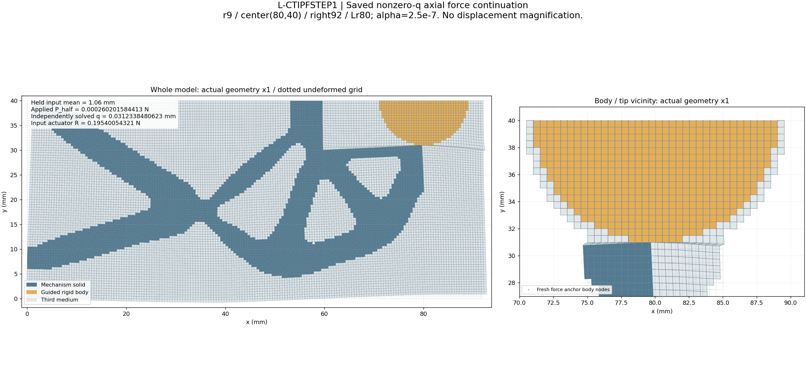
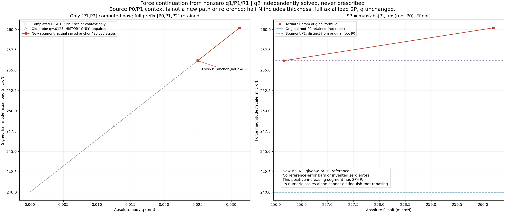
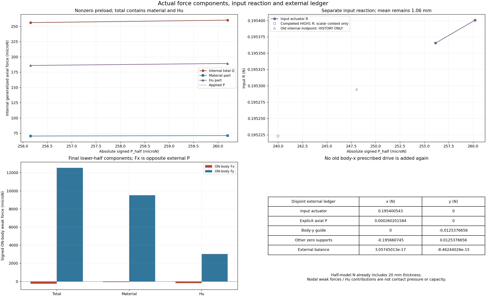
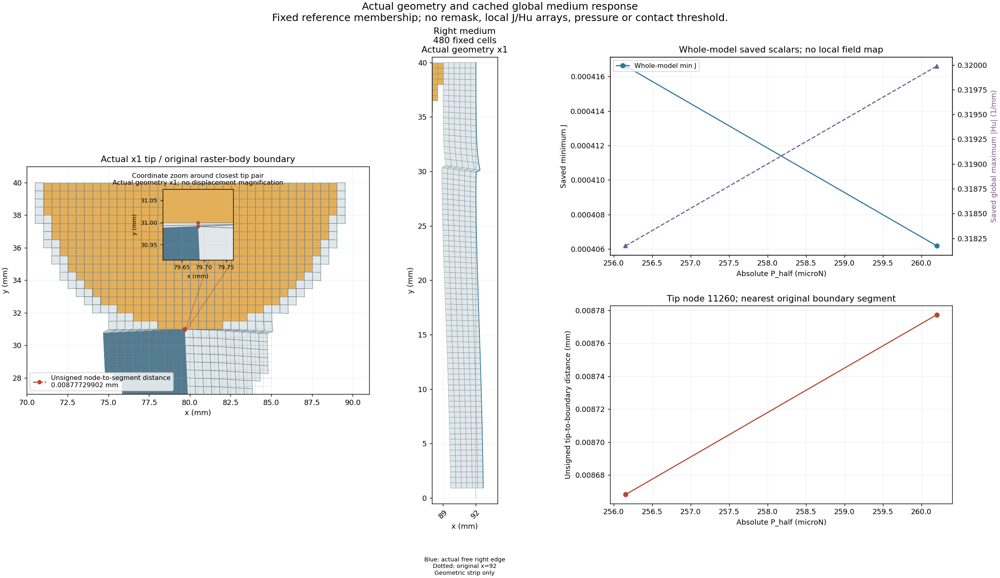
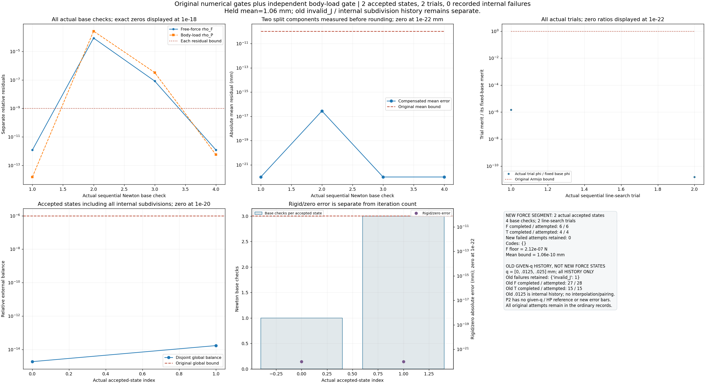
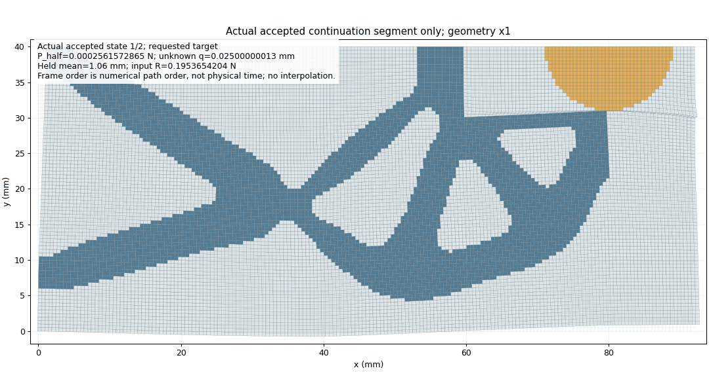

2026-10-24。实际闭卡状态：PASS；数值路径：success。科学窗口已关闭；58生产源码保持原字节。本页按实际存在的结果/媒体交付，未执行的部分不当作PASS。
| accepted | global original | role | P_half / N | q / mm | R / N | min J | max |Hu| / mm | checks |
| 0 | 1 | fresh P1 | 0.0002561572865437846 | 0.025000000126731543 | 0.19536542042269825 | 0.00041660852936145333 | 0.3181733832407684 | 1 |
| 1 | 2 | original target | 0.000260201584412907 | 0.03123384806234602 | 0.1954005432102683 | 0.000406181815315325 | 0.31998793705692913 | 3 |
mean保持1.06 mm，r9/(80,40)/right92/Lr80/alpha2.5e-7及原门不变。完整[P0,P1,P2]是谱系，本次仅[P1,P2]；q为绝对值且未知求解，root P0/segment P1分别保留。本正增段实际SP=P，不独证根尺度行为。P2没有给q/HP参考，不造q/全DOF/R的零误差或沿旧P1工程门授新资格。
P已含t20的半模型N，完整镜像轴向2P、q不倍增；R是独立输入反力，ON-body/material/Hu为有符号弱力，不称压力或纯接触承载。旧低J、较大Hu及probe invalid_J/.0125内部二分完整保留；新段内部尝试与旧历史分开。






只含本段实际接受态，无插值；帧数沿writer回执，不解码复核。
原窗口科学证据包已按原字节复制，状态见实际seal。 这里只复制本轮既存原字节，不解包、重封、读科学数组或再看像素。图像存在不是QA通过证据；最终root QA和实际结果以原回执为准，renderer pending保留其QA前时点。部分态和缺失图保持真实，不开额外计算/显示窗口。
未复制旧包或58源整树；生产源从main基线及既有manifest恢复。状态表/普通完整result用于审查，科学续载源需按RECOVERY恢复原目录结构和身份，不直接编辑已绑定JSON。原核、门、资格及失败历史保持，不升级压力、极限、释放、稳定性或HP/HF5资格。